Sentiment Analysis of Mobile Banking App Reviews
A Reproducible Study: R to Python, Old Data to New Data, Lexicon to Transformer
Summary
This report documents a reproducible research project that translates an original R-based sentiment analysis of mobile banking app reviews into Python, extends it with newly scraped data, and augments the lexicon-based methods with a transformer (BERT) approach. The project covers five major US banks: Bank of America, Chase, Citi, Marcus by Goldman Sachs, and Wells Fargo across the Apple App Store (iOS) and Google Play (Android). The core research questions are: (1) Can the original R findings be faithfully reproduced in Python? (2) Do the results change with a fresh data scrape? (3) Does a transformer model produce sentiment classifications consistent with the lexicon approach?
1. Introduction and Motivation
1.1 Research Context
Customer reviews on mobile app stores represent a rich, continuously updated source of unstructured opinion data. For the banking sector, app reviews offer direct evidence of customer satisfaction, pain points, and competitive positioning — feedback that often offers a faster point of view and is more granular than traditional survey methods. Sentiment analysis of these reviews can help researchers and practitioners understand how user experience varies across institutions and platforms, and whether negative signals co-occur with specific feature complaints or rating patterns.
There are two motivations for this study. Academically, it provides an opportunity to practice reproducible research: taking an existing empirical study, replicating it in a different computational environment, and evaluating whether the results remain the same. Practically, it investigates whether mobile banking sentiment has shifted between the original data collection window and a fresh scrape in 2026, and whether more sophisticated deep learning methods agree with classic dictionary-based approaches.
1.2 Inspiration and Source Study
The project is inspired by the tidytext-based workflow popularised by Silge and Robinson (2017), which applies lexicon-based sentiment scoring to tokenised text in a tidy data format. The original analysis follows this approach: it imports and cleans review data, performs unigram sentiment analysis using three lexicons (Bing, AFINN, NRC), constructs bigrams with negator-aware scoring, and evaluates results statistically. The goal of this project is to demonstrate that these findings are reproducible — the same pipeline, implemented in Python with equivalent libraries, produces consistent conclusions — and then to extend the study in two directions: new data and a transformer model.
2. Data
Dataset is obtained with the means of scrapping reviews from the App Store and Google Play for the five major banks in US. The original dataset was collected in 2023, while the new dataset was scraped in mid-2026. Both datasets contain reviews in English, with metadata including star ratings, review text, date, platform, and storefront. The data is stored as CSV files per bank and platform, which are combined and preprocessed for analysis.
The major banks included in the dataset are some of the largest US financial institutions, which are: Bank of America, Chase, Citi, Marcus by Goldman Sachs, and Wells Fargo. Each has a significant mobile banking user base. The platforms covered are the two dominant mobile ecosystems: Apple’s App Store (iOS) and Google’s Play Store (Android). This allows for cross-platform comparisons and insights into whether user sentiment differs by operating system.
The method of scrapping differs for each platform due to their distinct APIs and structures. For the iOS App Store, the script uses Python’s requests library to directly parse Apple’s publicly accessible XML/JSON RSS feed endpoints, which are ordered by the most recent submissions. For the Google Play Store, it leverages an open-source web scraping library (google-play-scraper) that mimics browser requests to dynamically fetch and page through raw review payloads using continuation tokens. Both approaches process these external data streams in real time, converting the raw JSON responses into structured Pandas DataFrames before exporting them to CSV files.
2.1 Exploratory Data Analysis of the Original Dataset (Old Data)
The original dataset was collected in 2025 using a combination of web scraping and API access methods. It includes reviews from the same five banks and both platforms, but covers a different time period than the new data. The dataset is stored as CSV files, one per bank and platform, with columns for review text, star rating, date, and other metadata. The original analysis applied lexicon-based sentiment scoring to this dataset to derive insights about user sentiment and its relationship to star ratings.
2.2 Exploratory Data Analysis of the New Dataset (New Data)
The new dataset was collected using a dedicated scraper (Dataset/scraper.ipynb) targeting the same five banks and both platforms. The scraping window covers a more recent period - early 2026. While the column structure is identical to the old dataset, the new data captures a different temporal slice of user opinions and may reflect changes in app features, service quality, or competitive dynamics that occurred after the original collection window. Upon checking, the rating distribution of the new data is similar to the original one, with the majority of reviews are at extreme positions, either 1 or 5 stars (Figure 1).
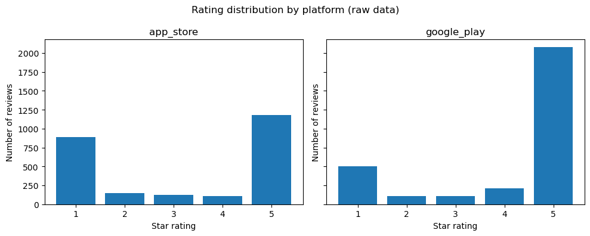
The top 20 most frequent bigrams in the new dataset reveal a clear thematic structure in how users discuss their mobile banking experience (Figure 2). Customer service is by far the most frequent bigram (~220 occurrences), nearly 25% more common than the second-ranked Wells Fargo (~175), which appears frequently as a named entity within reviews of that bank. Credit card (~150) and user friendly (~115) round out the top four, reflecting that product features and usability remain central to how users articulate their experience.
Several bigrams signal recurring friction points: no longer (~65), bring back (~42), please fix (~38), and blank screen (~37) all indicate users reacting to feature removals or technical failures.
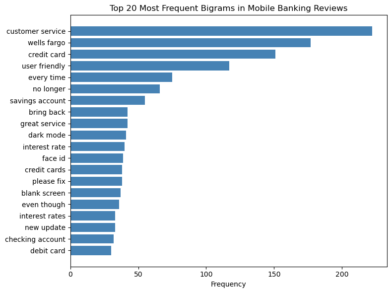
2.3 Data Preprocessing
2.3.1 Data Preprocessing for Lexicon-Based Methods
Preprocessing follows the same logical steps in both the R original and the Python replications:
- Import and combine - all per-bank CSVs are concatenated into a single dataframe
- Bank and platform standardisation — filenames are parsed to extract bank names; platform codes (
app_store→iOS,google_play→Android) are mapped to readable labels - Type coercion —
ratingis cast to numeric;dateis parsed to datetime - Language detection — reviews not detected as English are removed (using
langdetectin Python) - Raw text construction —
titleandreviewfields are concatenated intoraw_text - Tokenisation and stopword removal — words are extracted using regex; a custom stopword list (NLTK English stopwords + domain terms: app, bank, banking, mobile, iphone, apple, android, phone) is applied
- Bigram construction — adjacent word pairs are extracted from cleaned text, with negators (not, never, no, cannot, etc.) explicitly excluded from the stopword filter so they are preserved in bigrams
2.3.2 Data Preprocessing for Transformer Methods
For the transformer approach, an additional cleaning step keeps punctuation intact (since BERT tokenisers handle it natively) and removes URLs.
3. Methodology
3.1 Lexicon-Based Sentiment Analysis
Three lexicons are applied to the filtered tokens. Scores are computed at the review level and disaggregated by bank and platform.
Bing (Opinion Lexicon): A binary lexicon classifying words as positive or negative. Review sentiment is the count of positive words minus negative words.
AFINN: An integer-scored lexicon (−5 to +5) (Nielsen 2011). Review scores are the sum of matched word scores. Pearson correlation between AFINN scores and star ratings serves as a validity check.
NRC Emotion Lexicon: Developed by Mohammad and Turney (2013), this lexicon maps words to 8 emotion categories (anger, anticipation, disgust, fear, joy, sadness, surprise, trust) and 2 polarity categories. One word may belong to multiple categories, enabling nuanced emotion profiling.
3.2 Bigram Analysis and Negation Correction
Unigram methods cannot handle negation: not good is scored as positive because good carries a positive AFINN score. To quantify this limitation, bigrams are constructed from the raw review text, with negators explicitly retained in the stopword filter. A set of 22 negators is defined (e.g., no, not, n’t, never, cannot). Where the first token of a bigram is a negator and the second has an AFINN score, the score is sign-flipped. The magnitude of the resulting correction is reported by star-rating group.
3.3 Transformer-Based Sentiment Analysis
As a complement to the lexicon methods, the pre-trained model nlptown/bert-base-multilingual-uncased-sentiment (nlptown2019?) is applied via the Hugging Face transformers pipeline. The model predicts a 1–5 star rating for each review; predictions are normalised to a continuous sentiment score:
\[\text{bert\_score} = \frac{\text{bert\_stars} - 1}{4} \in [0, 1]\]
Model validity is assessed by (1) Pearson correlation between bert_score and the actual star rating (95% CI via Fisher’s z-transformation), (2) boxplots of bert_score stratified by star rating, bank, and platform, (3) exact star-level agreement and a full confusion matrix, and (4) a Mann–Whitney U test comparing platform distributions.
4. Results
4.1 Results Python vs R
Yap yap yap here
4.2 Results Old Data vs New Data - Lexicon Analysis
This section compares lexicon-based sentiment results across three lexicons (Bing, AFINN, NRC) between the original 2025 dataset and the newly scraped 2026 dataset. The new dataset contains 4,478 reviews, covering the same five banks and two platforms but a different temporal window.
BING
In the new data, the Bing lexicon identified 7,363 positive and 3,657 negative word tokens, yielding an overall positive-to-negative ratio of approximately 2.01:1. The directional pattern of results is consistent with the original study: positive words dominate in aggregate, and the platform gap observed in the old data persists — Android reviews skew more positive than iOS reviews across most banks (Figure 3 and Figure 4).
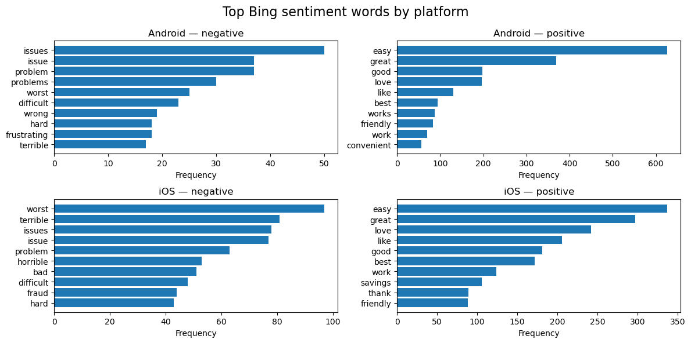
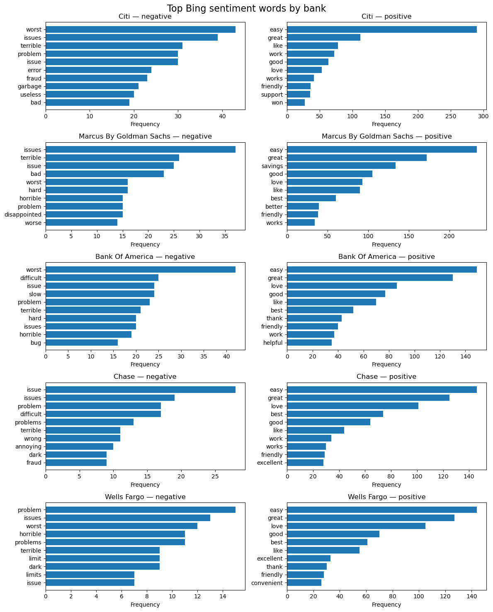
AFINN
The AFINN analysis of the new data yields a Pearson correlation between review-level AFINN sum scores and star ratings of r = 0.539 (n = 3,885; 95% CI: [0.516, 0.561]; p < 0.001). This is a moderate-to-strong positive correlation, confirming that higher AFINN scores correspond to higher user ratings — the same directional conclusion as the original data.
Compared to the old dataset, the correlation in the new data is slightly lower (the original study reported a Pearson correlation at 0.59). This small reduction in predictive alignment may reflect the greater temporal concentration of recent reviews around extreme ratings (1 and 5 stars), which inflates the role of polarity extremes and reduces mid-range discrimination.
The per-bank AFINN mean-sum scores reveal an interesting structural shift (Figure 5): Citi iOS is the only bank–platform cell with a negative mean AFINN sum score (−0.724). All other bank–platform cells remain positive. Wells Fargo iOS posts the highest mean AFINN sum (3.80) in the new data, followed by Marcus by Goldman Sachs iOS (3.12) and Chase iOS (2.99). On Android, scores are more tightly clustered, ranging from approximately 1.9 (Chase) to 2.6 (Citi Android), which is broadly consistent with the old data.

NRC Emotion The NRC emotion profile in the new data is dominated by positive (6,941 tokens) and trust (5,281 tokens), together accounting for over 44% of all matched tokens — a pattern that mirrors the old data and is consistent with the service-oriented nature of banking apps, where trust vocabulary (account, recommend, secure) is naturally frequent.
The platform breakdown reveals a structurally important asymmetry (Figure 6): Android reviews show a markedly higher positive proportion (26.9% of tokens) compared to iOS (23.8%), while iOS shows higher negative (12.8% vs 9.8%), anger (5.9% vs 4.5%), fear (5.4% vs 3.8%), and sadness (5.7% vs 3.8%) proportions. This Android–iOS emotional gap is consistent across both datasets and reinforces the finding from the BERT analysis that Android users express systematically more positive sentiment than iOS users — a pattern that warrants further investigation into whether it reflects genuine experience differences or platform-specific reviewer demographics.
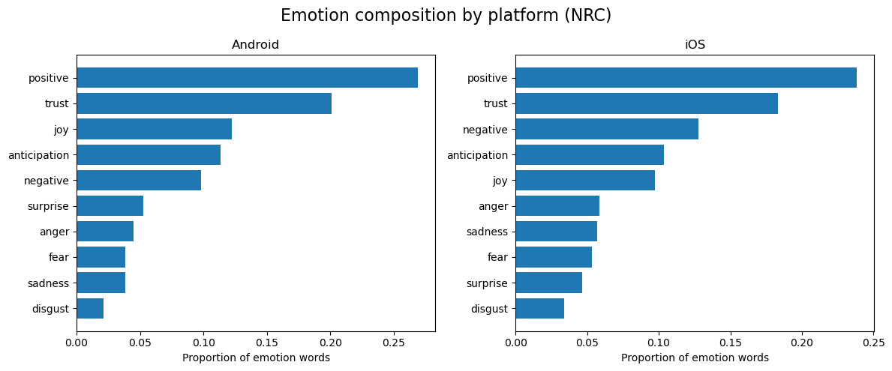
Bigram and Negation Analysis
The top bigrams in the new data are largely consistent with the old data: customer service, credit card, user friendly, savings account, and checking account dominate the co-occurrence table. Two new entries — dark mode (rank 13) and blank screen (rank 16) — suggest that UI/UX concerns specific to the late 2025 to early 2026 period have increased in salience.
The negation correction analysis confirms the structural finding from the original study: 1-star reviews show the largest total negation shift (−216 across the dataset, averaging −0.164 per review), reflecting that negative reviews contain the most negator–sentiment bigrams. Crucially, the sign of the correction is negative for 1–4 star reviews but positive for 5-star reviews (total shift +63), meaning that naive unigram AFINN systematically underestimates negativity in low-rated reviews and underestimates positivity in top-rated reviews. This directional finding holds in both the old and new data, confirming that negation correction is not a temporal artifact but a structural property of this type of review language.
The most frequent negated bigrams are no problems (16 occurrences, flipped from −2 to +2), not allow (15), not happy (12), no problem (11), and no help (10) - indicating that both false-negative corrections (e.g., not happy correctly flipped to negative) and false-positive corrections (e.g., no problems correctly flipped to positive) are present in meaningful quantities, broadly consistent with the pattern in the original data.
4.3 Comparison of BERT Sentiment Results Across Preprocessing Approaches
This section compares the outputs of the BERT-based sentiment classifier (nlptown/bert-base-multilingual-uncased-sentiment) applied to two versions of the dataset: one preprocessed using the original pipeline and one using the revised approach. Both versions were scored using identical model settings and scoring logic, with predicted star ratings mapped to a normalized sentiment score in the range [0, 1]. The comparison focuses on whether the revised preprocessing affects the distribution of predicted sentiment, its alignment with actual star ratings, and the relative sentiment profiles across banks and platforms.
Distribution of BERT Predicted Sentiment
Both datasets produce a broadly similar bimodal distribution of BERT-predicted sentiment, with the majority of reviews classified at either the negative extreme (1 star) or the positive extreme (5 stars), and relatively few reviews falling in the middle ratings of 2 through 4 (Figure 7 and Figure 8). However, a notable difference emerges in the balance between the two poles. In the older data, the 1-star predicted count (~1,550) is considerably closer to the 5-star predicted count (~2,000), whereas in the newer data the gap widens, with 1-star predictions declining to approximately 1,380 while 5-star predictions rise to around 2,100 (Figure 8). This suggests that the newer batch of reviews contains a higher proportion of positively-perceived content as classified by the model. The sentiment score density plots reinforce this pattern: both distributions are heavily concentrated at 0.0 and 1.0, reflecting the model’s tendency toward confident polar predictions, with the overall shape of the density curve remaining consistent across both datasets (Figure 7 and Figure 8).
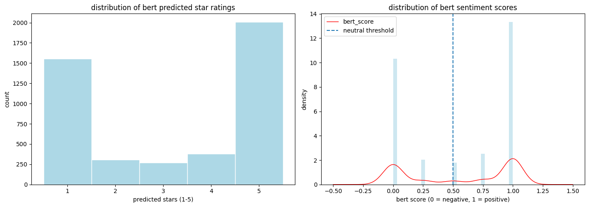
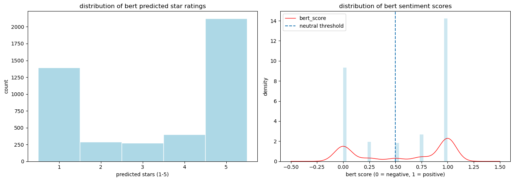
Relationship Between BERT Scores and Actual Star Ratings
The relationship between BERT sentiment scores and actual star ratings is consistent across both datasets (Figure 9 and Figure 10). In both cases, the model assigns near-zero sentiment scores to 1-star reviews with very tight interquartile ranges, indicating high confidence in negative classifications. Scores rise progressively through 2- and 3-star ratings, with 3-star reviews showing the widest spread, reflecting the model’s uncertainty around neutral or mixed-sentiment reviews. Reviews rated 4 and 5 stars are predominantly scored above the neutral threshold of 0.5, with 5-star reviews showing a highly compressed distribution concentrated at 1.0. The two datasets are visually near-identical in this regard (Figure 9 and Figure 10), suggesting that the shift in review composition between the older and newer data did not meaningfully alter the model’s ability to align predicted sentiment with actual star ratings.
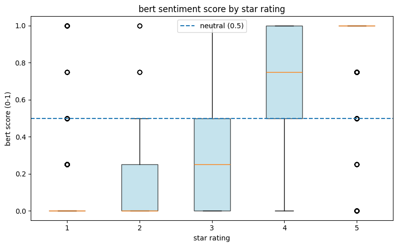
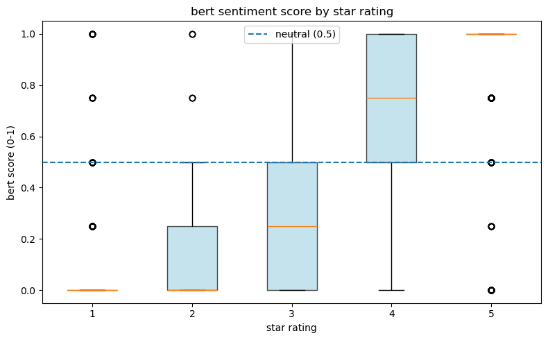
Average BERT Sentiment Scores by Bank and Platform
Across both datasets, a consistent platform gap is visible: Android reviews tend to receive higher BERT sentiment scores than iOS reviews for most banks (Figure 11 and Figure 12). Citi stands out in both periods, with Android scores approaching 0.9 while iOS scores remain well below the neutral threshold of 0.5, making it the most polarised bank by platform in both the older and newer data. Bank of America shows a similar pattern, with strong Android sentiment but iOS scores falling below neutral in both datasets. Wells Fargo is the only bank where both platforms consistently score above neutral, and remains so across both periods. One notable structural difference between the two datasets is that Chase appears in the older data (Figure 11) with both platforms scoring above neutral, whereas in the newer data (Figure 12) Chase drops to the bottom of the ranking with iOS sentiment just at the neutral threshold. Marcus by Goldman Sachs remains relatively stable across both periods, with Android scores moderately above neutral and iOS scores hovering near 0.5.
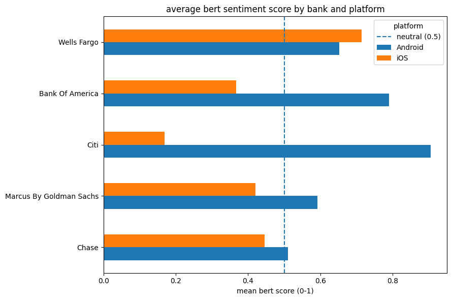
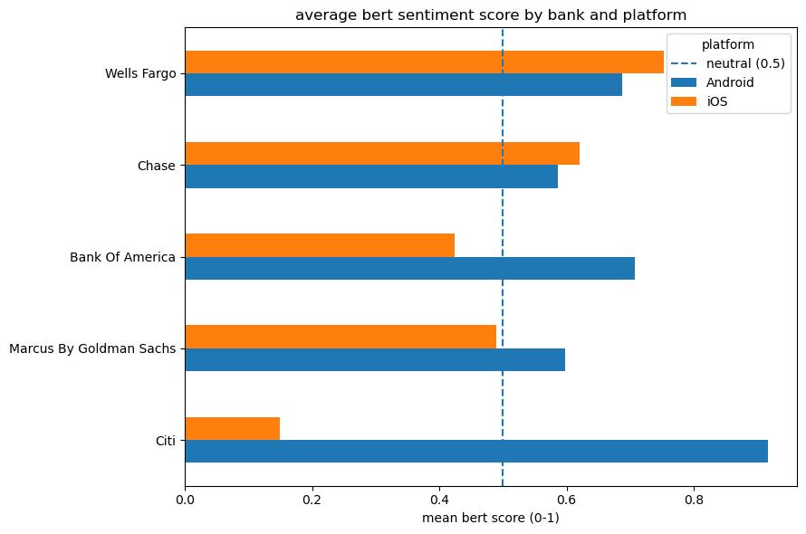
Average BERT Sentiment Scores by Operating Platform
The per-platform breakdown of BERT sentiment scores by star rating reveals a largely stable pattern across both datasets (Figure 13 and Figure 14). On Android, both the older and newer data show near-identical distributions: 1-star reviews are tightly concentrated at 0.0, scores rise progressively through 2 and 3 stars with widening spread, and 4- and 5-star reviews sit predominantly above the neutral threshold. The iOS platform tells a slightly different story between the two periods. In the older data (Figure 13), the iOS 4-star distribution closely mirrors its Android counterpart, with a median around 0.75. In the newer data (Figure 14), the iOS 4-star box shifts noticeably, with a lower median of approximately 0.6 and a wider interquartile range, suggesting greater variability in how the model scores moderately positive iOS reviews in the newer period. Across both datasets and platforms, 1- and 2-star distributions remain consistently low and 5-star reviews remain compressed near 1.0, indicating that the model’s confidence at the sentiment extremes is robust regardless of platform or time period.
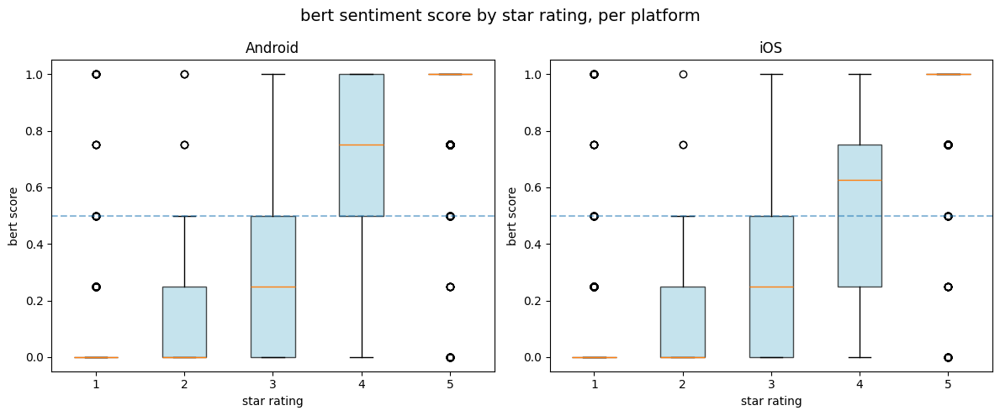
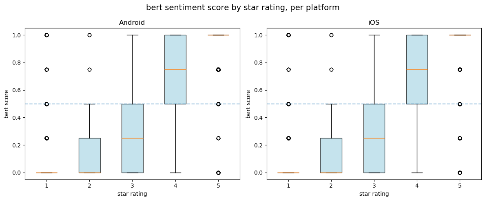
Statistical Correlation Between BERT Scores and Star Ratings
| Metric | Old Data | New Data |
|---|---|---|
| n | 4,518 | 4,478 |
| Pearson r | 0.8615 | 0.8660 |
| p-value | < 0.001 | < 0.001 |
| 95% CI | [0.8538, 0.8688] | [0.8585, 0.8731] |
Both datasets show a strong positive correlation between BERT sentiment scores and actual star ratings, with Pearson r values of 0.8615 and 0.8660 for the older and newer data respectively, both statistically significant (p < 0.001). The marginal increase in r across the two periods suggests a slightly stronger alignment between model-predicted sentiment and user-assigned ratings in the newer dataset, though the difference is negligible given the overlapping confidence intervals ([0.8538, 0.8688] vs [0.8585, 0.8731]). Overall, these results confirm that the BERT model captures sentiment signal consistently across both time periods.
Statistical Correlation Between BERT Scores and Users’ Platforms
| Metric | Old Data | New Data |
|---|---|---|
| Platforms compared | Android vs iOS | Android vs iOS |
| U statistic | 3,379,410.0000 | 3,174,169.0000 |
| p-value | 3.23e-93 | 1.46e-63 |
Both datasets show a statistically significant difference in BERT sentiment scores between Android and iOS platforms (p < 0.001 in both cases), confirming that platform is a meaningful source of variation in user sentiment regardless of time period. The U statistic is larger in the older data (3,379,410 vs 3,174,169), which is consistent with the older dataset having slightly more observations (n = 4,518 vs 4,478). While both p-values are extremely small, the older data yields a more extreme test statistic, suggesting the platform gap in sentiment may have been marginally more pronounced in the earlier period, which aligns with what was observed in the bank-by-platform plots (Figure 11 and Figure 12).
4.4 Results AFINN vs BERT - New Data
5 Discussion
5.1 Reproducibility Assessment
Something about environment in python Overall assesment about reproducibility, minor differences, but overall conclusions hold Slight conclusions about the original study’s robustness to language and implementation choices
The R-to-Python translation demonstrates that the core analytical conclusions of the original study are reproducible across languages. Minor numerical differences arise from:
- Language detection:
langdetectvscld3use different underlying models; the set of English-classified reviews may differ slightly - Stopword lists:
tidytext::stop_wordsdiffers from NLTK’s English list - Bing lexicon size: NLTK
opinion_lexiconcovers more words than the Bing lexicon embedded in tidytext
These are expected cross-language reproducibility gaps and do not undermine the directional conclusions.
5.2 Limitations - AGAS
- Lexicon coverage: All three lexicons were built for general English, not financial app reviews — domain terms (overdraft, Zelle, wire transfer) may be absent
- Negation scope: The bigram correction handles only two-word negation; longer-range negation is not captured
- Temporal confounding: Old and new data cover different time windows, so observed differences may reflect temporal trends, not genuine quality changes
- Label imbalance: App Store reviews skew heavily toward 5 stars; without class-weighting, the transformer may over-predict “positive”
6 Generative AI Disclosure
In accordance with course policy (dr Jakub Michańków, Reproducible Research 2026), generative AI (Claude AI) was used to assist with coding tasks, refine the code.
All analytical decisions, interpretations, and research design are the team’s own work.